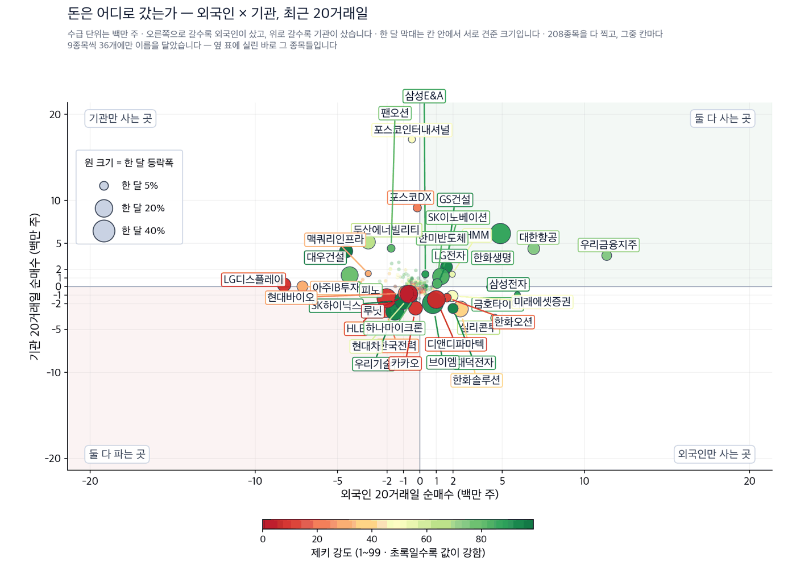
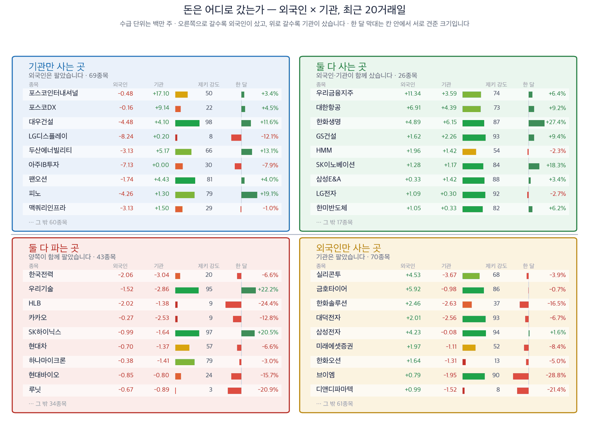

금리가 4%를 넘어서자 외국인은 은행과 보험을 샀습니다
코스피 6,909.91 | 코스닥 820.64 | 국고채 10년물 4.54% | 미 국채 10년물 4.97% | 나스닥 종합 26,385 |
지난주 서울을 누른 것은 금리였습니다. 9월 11일 코스피는 6,909.91로 마쳐 7,000선을 내줬습니다. 코스닥은 820.64입니다. 같은 날 10년 만기 국고채 금리는 연 4.54%로 올라섰습니다. 3년물도 연 4%를 넘었습니다. 2023년 이후 3년 만입니다. (한국경제 9월 14일자)
주말 사이 뉴욕은 반대로 움직였습니다. 9월 11일 나스닥 종합은 1.16% 올라 26,385로 마쳤습니다. S&P 500은 7,667입니다. 물가지표가 예상에 부합하자 되돌린 값입니다. (IBD 9월 11일자)
그래서 오늘 물음은 하나입니다. 금리가 이렇게 오르는 동안 외국인은 무엇을 샀는가입니다. 답은 반도체가 아니었습니다. 저희가 20거래일 순매수를 세어 보니 1위는 우리금융지주였습니다. 2위는 대한항공, 4위는 한화생명입니다. 은행과 보험, 항공이 명단 맨 위로 올라왔습니다.
제키 신호등

| 켜진 등 | 오늘의 국면입니다. 초록은 매수 우위, 노랑은 관망, 빨강은 매수 자제입니다. |
| 채워진 칸 | 7가지 조건 중 몇 개를 통과했는지입니다. 칸이 많이 찰수록 시장 구조가 튼튼합니다. |
| 칸이 다 찼는데 노랑·빨강이면 | 다른 이유로 한 단계 낮춘 것입니다. 그 이유를 그림 아래에 적었습니다. |
초록불은 매수 우위, 노란불은 관망, 빨간불은 매수 자제를 뜻합니다. 코스피는 7가지를 다 넘겼지만 추세 지표가 음수여서 한 단계 낮춘 노란불입니다. 코스닥은 2가지만 넘겨 빨간불입니다.
- 금리로 버는 곳을 먼저 보십시오. 외국인 순매수 1위가 은행 지주였고 4위가 생명보험이었습니다. 두 종목은 기관도 같은 기간에 사들였습니다. 외국인과 기관이 함께 산 종목은 오늘 고른 4종목 가운데 3종목입니다.
- 원전은 지금 기관만 사고 있습니다. 두산에너빌리티는 기관 순매수 4위인데 외국인은 313만주를 팔았습니다. 한미 원전 협력 소식으로 국내 원전 상장지수펀드가 한 달에 19.9% 올랐지만, 수급은 아직 한쪽뿐입니다.
- 바이오는 오늘 테마에서 제외합니다. 8월에 외국인이 바이오를 담았다는 기사가 있었습니다. 그러나 셀트리온은 한 달 동안 11.8% 내렸고, 외국인과 기관이 모두 팔았습니다. 기사가 그럴듯해도 값이 따라오지 않으면 종목으로 만들지 않습니다.
먼저, 이번 주 경제
| 날짜 | 무엇을 보는가 | 넘으면 어떻게 되는가 |
|---|---|---|
| 9월 14일 월요일 | 한국 증시 이번 주 첫 거래 | 금요일의 금리 급등을 지수가 어떻게 받아내는지 처음 확인됩니다 |
| 9월 16일 수요일 | 미국 통화정책 회의 | 미국 금리선물은 인상 확률을 87%로 봅니다. 올리면 원화가 약해지고 외국인 순매수가 먼저 끊깁니다 |
| 9월 18일 금요일 | 미국 선물·옵션 동시 만기 | 거래량이 늘고 하루 변동이 커집니다. 그날의 방향은 추세로 읽지 않습니다 |
테마 1 · 금리로 버는 곳
금리가 오르면 은행은 예금과 대출의 금리 차로 더 법니다. 보험사는 다릅니다. 오래 지급해야 할 보험금을 지금 금리로 다시 계산하기 때문에, 금리가 오르면 그 부담이 줄어듭니다. 저희 업종 순위에서도 생명보험이 2위입니다. 정부가 30년 만기 국고채 발행을 줄이고 나선 것도 같은 금리 상승 때문입니다. (한국경제 9월 14일자)
| 누가 | 우리금융지주 |
| 무엇을 | 외국인이 20거래일 동안 1,133만주를 순매수했습니다. 시장 전체 1위입니다 |
| 언제 | 9월 9일까지의 20거래일입니다 |
| 어디서 | 유가증권시장 은행 업종이며, 저희 업종 순위로는 10위입니다 |
| 왜 | 금리가 오르면 예금과 대출의 금리 차인 예대마진이 넓어지고, 배당을 늘린 곳에 돈이 먼저 갑니다 |
| 어떻게 | 같은 기간 기관도 359만주를 사들여 기관 순매수 8위에 올랐습니다 |
제키 강도는 74로 90에 못 미칩니다. 수급은 1위인데 주가는 아직 그만큼 오르지 않았다는 뜻입니다. 52주 고점까지는 14.0%가 남아 있습니다.
| 누가 | 한화생명 |
| 무엇을 | 외국인이 489만주, 기관이 615만주를 순매수했습니다 |
| 언제 | 9월 9일까지의 20거래일이며, 외국인 4위·기관 3위입니다 |
| 어디서 | 생명보험 업종이며, 저희 업종 순위로는 2위입니다 |
| 왜 | 장기금리가 오르면 나중에 낼 보험금의 현재 가치가 줄어 자본 부담이 가벼워집니다 |
| 어떻게 | 한 달 동안 27.4% 올라 오늘 4종목 가운데 상승폭이 가장 큽니다 |
약점은 그 상승폭 자체입니다. 한 달에 27.4% 오른 뒤라서 52주 고점까지 9.2%밖에 남지 않았습니다. 금리 상승이 멈추면 주가가 올랐던 이유도 함께 사라집니다.
테마 2 · 원전 발주를 기다리는 곳
한국과 미국이 미국 땅에 대형 원전 8기를 짓는 방안을 논의하고 있습니다. 국내 원전 상장지수펀드는 한 달에 19.9% 올랐고, 같은 기간 미국 원전주를 담은 펀드는 내렸습니다. 원전을 짓는 기술은 한국에 있고, 미국 원전주는 아직 수주가 없다는 뜻입니다. (매일경제 9월 13일자)
| 누가 | 두산에너빌리티 |
| 무엇을 | 원자로와 증기발생기 같은 주요 기기를 만듭니다 |
| 언제 | 기관이 9월 9일까지 517만주를 사들여 순매수 4위에 올랐습니다 |
| 어디서 | 창원 공장이 주요 기기를 만드는 근거지입니다 |
| 왜 | 원전은 만드는 데 오래 걸리는 기기부터 주문이 나오기 때문입니다 |
| 어떻게 | 한국투자증권 장남현 연구원은 이 회사의 주요 기기 수주 기회가 먼저 늘어날 것으로 봤습니다 |
외국인은 같은 기간 313만주를 팔았습니다. 지금은 기관 한쪽만 사고 있습니다. 석 달로 보면 주가는 아직 마이너스이고, 52주 고점과의 거리도 오늘 4종목 가운데 가장 멉니다.
테마 3 · 유가 100달러가 남긴 것
서부텍사스산원유는 배럴당 100.1달러입니다. 정유사는 원유를 사서 제품으로 만들어 팝니다. 그래서 유가가 오르면 미리 사 둔 원유의 평가액이 올라 재고 이익이 생깁니다. 저희 업종 순위에서 석유와가스는 1위입니다.
| 누가 | 에쓰오일 |
| 무엇을 | 외국인 지분율이 국내 상장사 가운데 최상위권입니다 |
| 언제 | 9월 9일까지 외국인 5만주, 기관 58만주를 순매수했습니다 |
| 어디서 | 울산 정유·석유화학 공장이 이 회사의 본거지입니다 |
| 왜 | 중동 수송로가 막히면 정유 제품 값이 원유보다 더 빨리 오르기 때문입니다 |
| 어떻게 | 석 달 동안 34.6% 올라 제키 강도가 92입니다. 상위 10% 안입니다 |
저희가 세는 4가지 조건을 모두 넘긴 곳은 오늘 여기뿐입니다. 다만 근거가 유가 하나에 걸려 있습니다. 유가가 내리면 주가도 같은 이유로 먼저 되돌립니다.
오늘 찾은 것, 한 장으로
| 테마 | 종목 | 제키 강도 | 근거의 무게 |
|---|---|---|---|
| 금리로 버는 곳 | 우리금융지주 (316140) | 74 | 근거 있음 |
| 금리로 버는 곳 | 한화생명 (088350) | 87 | 근거 있음 |
| 원전 발주 | 두산에너빌리티 (034020) | 66 | 확인 필요 |
| 기름값 | 에쓰오일 (010950) | 92 | 근거 확실 |
근거의 무게 — 4가지를 세었습니다
한 달 상승, 제키 강도 90 이상, 외국인 20거래일 순매수, 기관 20거래일 순매수를 각각 셉니다. 값은 9월 11일 종가, 수급은 9월 9일까지입니다.
| 종목 | ①값이 올랐나 | ②강도 90↑ | ③외국인 순매수 | ④기관 순매수 | 충족 | 근거의 무게 |
|---|---|---|---|---|---|---|
| 우리금융지주 (316140) | O | X | O | O | 3/4 | 근거 있음 |
| 한화생명 (088350) | O | X | O | O | 3/4 | 근거 있음 |
| 두산에너빌리티 (034020) | O | X | X | O | 2/4 | 확인 필요 |
| 에쓰오일 (010950) | O | O | O | O | 4/4 | 근거 확실 |
기관과 외국인은 어디로 갔나
한국거래소가 공시한 순매수 주수를 20거래일로 더했습니다. 저희 계산이 아니라 공시된 값입니다. 종목마다 마지막 기록일이 달라 기준일은 9월 9일입니다. 이름을 확인한 208종목을 모두 그렸습니다.

| 점 하나 | 종목 하나입니다. 가로·세로 위치가 두 값을 그대로 나타내고, 가운데 그어진 두 선이 기준선입니다. 네 귀퉁이의 이름표가 그 칸의 뜻입니다. |
| 점 크기 | 최근 한 달 등락폭입니다. 오르든 내리든 크게 움직였으면 큰 점입니다. |
| 점 색 | 제키 강도입니다. 초록일수록 주가가 시장에서 강합니다. |
| 30종목만 | 이름이 겹치면 못 읽기 때문입니다. 가운데 몰린 나머지는 움직임이 거의 없는 종목들이라 뺐습니다. |

| 네 칸 | 가로와 세로 두 값이 각각 기준선을 넘었는지로 넷을 가릅니다. 오른쪽 위는 둘 다 넘은 곳, 왼쪽 아래는 둘 다 못 넘은 곳, 나머지 두 칸은 한쪽만 넘은 곳입니다. |
| 칸마다 9종목 | 그 칸에서 움직임이 가장 큰 순서입니다. 나머지는 칸 아래에 몇 종목인지만 적었습니다. |
| 한 달 막대 | 0을 가운데 두고 오른쪽이 상승, 왼쪽이 하락입니다. 길이는 같은 칸 안에서만 서로 견주십시오 — 칸마다 기준이 다릅니다. |
| 제키 강도 | 1~99 순위입니다. 막대가 길수록, 초록에 가까울수록 그 종목의 주가가 시장에서 강합니다. |
찾아낸 종목에 자금이 따라왔는가
기사가 맞아도 자금은 따로 봅니다. 위에서 고른 4종목의 20거래일 순매수를 주수 그대로 적었습니다. 한국거래소 공시값이며 기준일은 9월 9일입니다. 플러스는 순매수, 마이너스는 순매도입니다.
| 종목 | 외국인 20거래일 | 기관 20거래일 | 한 줄로 |
|---|---|---|---|
| 우리금융지주 (316140) | +1,133만주 | +359만주 | 양쪽이 함께 샀고 외국인 순매수는 시장 1위입니다 |
| 한화생명 (088350) | +489만주 | +615만주 | 양쪽이 함께 샀습니다 |
| 두산에너빌리티 (034020) | -313만주 | +517만주 | 기관만 샀습니다 |
| 에쓰오일 (010950) | +5만주 | +58만주 | 양쪽이 함께 샀지만 규모는 작습니다 |
이 표는 지금까지 누가 샀는지를 보여 줄 뿐이며 앞으로의 값을 예고하지 않습니다. 저희가 두 시장에서 검정해 보니 수급만으로는 다음 한 달을 맞히지 못했습니다.
업종 순위
9월 10일 기준 상위 업종입니다. 석유와가스(1위) · 생명보험(2위) · 반도체와반도체장비(3위) · 건설(4위) · 전기장비(5위).
오늘 고른 종목이 걸린 자리와 같습니다. 은행은 10위이고, 손해보험은 한 계단 올라 7위입니다. 항공사는 3계단 내려 8위입니다. 외국인이 대한항공을 691만주 사들였는데도 항공 업종 순위는 내렸습니다. 그래서 오늘 항공은 종목으로 만들지 않았습니다.
장중 체크리스트
9월 14일 월요일 개장부터 볼 것입니다.
- 개장 30분 — 10년 만기 국고채 금리가 연 4.54% 위에서 더 오르는지 봅니다. 더 오르면 은행과 보험이 먼저 반응합니다.
- 개장 30분 — 원·달러 환율이 금요일 종가보다 높게 열리는지 봅니다. 환율이 오르면 외국인 순매수가 먼저 끊깁니다.
- 개장 30분 — 서부텍사스산원유가 금요일 종가 위에 머무는지 봅니다. 아래로 내려오면 정유주의 근거가 약해집니다.
- 마감 30분 — 외국인 선물 순매수가 매수로 돌아서는지 봅니다. 코스피가 7,000선을 되찾는 조건입니다.
이 다이제스트를 읽는 법
- 제키 강도 — 저희가 보는 종목 가운데 값이 몇 등인지를 1에서 99로 매긴 값입니다. 90 이상이면 상위 10%입니다.
- 제키 신호등 — 시장 국면을 7가지 조건으로 세어 초록·노랑·빨강으로 나눈 것입니다.
- 근거의 무게 — 4가지 가운데 몇 가지를 넘었는지입니다. 충족 수가 딱지를 정합니다.